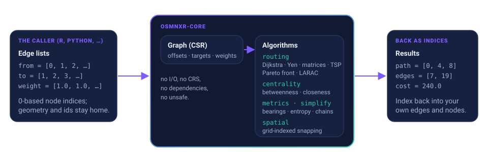

The graph math behind osmnxr, as a crate.
Routing, Pareto and constrained shortest paths, centrality, simplification and snapping over plain edge lists. No dependencies, no I/O: you bring the network, it brings the answers back as indices into your own data.


Edge lists in, indices out
The crate knows nothing about OpenStreetMap, geometry or coordinate systems. That is the point: the host language keeps the data and the meaning, the crate keeps the algorithms.
Exact where it matters
The Pareto front of bicriteria paths is computed exactly by Martins' label-setting; with a budget, its first entry is the exact constrained shortest path. The LARAC relaxation returns a feasible route with a proven lower bound for graphs where exact search is slow.
Parallel edges respected
Every path comes with the indices of the edges actually traversed, so attributes and geometry are recovered exactly, even when two edges join the same nodes. No min-weight twin substituted for the real one.
Snapping at scale
A uniform grid over the polyline segments snaps ten thousand points to the nearest edge in well under a second, with the position along the edge, ready to split it.
No dependencies, no unsafe
Pure Rust on the standard library. Nothing to audit, nothing to vendor beyond the crate itself, and it compiles to WebAssembly.
Deterministic
The travelling-salesman heuristic runs its iterated local search on a fixed-seed xorshift generator: the same matrix gives the same tour, and the host's random stream is untouched.
Metro-sized
On the Delhi road network (1.0 million nodes, 2.1 million directed edges) a constrained query answers in about 0.7 s and a nine-route Pareto front in about 1.5 s from R, with the Rust solve itself under a second.
Algorithms
Six modules, each a handful of functions over the same CSR graph.
routing: Dijkstra, shortest paths that report the edges traversed, Yen's k loopless shortest paths, distance matrices, the travelling-salesman heuristic (nearest neighbour, then or-opt / swap / 2-opt descent with full-recompute move evaluation, which keeps every move exact on asymmetric matrices, restarted from double-bridge kicks), the Pareto front and LARAC. centrality: Brandes betweenness and closeness with the usual normalisations. metrics: basic statistics, initial compass bearings and the Shannon entropy of binned bearings that tells a gridiron from an organic street plan. simplify: maximal chains of degree-2 nodes between endpoints, and connected components by union-find. spatial: a grid index that snaps points to the nearest polyline.
Length against penalty
The grid of the example ships with the crate. Three paths from corner to corner are nondominated: the steep shortcut twice, once, or not at all. A budget on the penalty picks one of them exactly; the Lagrangian solver reaches the same answer with three Dijkstra runs and reports how far its bound is from the cost.
| Path | Length | Penalty | Why it is on the front |
|---|---|---|---|
[0, 4, 8] | 240 m | 20 | Shortest: both legs of the shortcut. |
[0, 4, 7, 8] | 320 m | 12 | One leg of the shortcut, then the grid. |
[0, 1, 4, 5, 8] | 400 m | 4 | Grid only: the cheapest in penalty. |
With budget = 5, pareto_paths returns the third row alone, and csp_lagrangian returns a 400 m grid path with a lower bound of 390: feasible, and within 10 m of the proven optimum. cargo run --example grid.
How it works
One graph, built once from your edge lists; every answer points back into them.

Number the nodes
Map your ids to 0..n. Keep the map; the crate never sees the ids.
List the edges
Parallel from, to and weight vectors. Two-way streets are two edges.
Build and query
Graph::from_edges, then any of the routing or centrality functions.
Index back
Paths are node indices, edges are input positions. Geometry and attributes follow.
Install & run
Add the crate and build a graph. Rust 1.81 or later; changes between versions in the changelog.
$ cargo add osmnxr-core// shortest path, and the edges it used
use osmnxr_core::Graph;
use osmnxr_core::routing::{csr_edge_order, shortest_path_route};
let g = Graph::from_edges(&from, &to, &length, n_nodes);
let (path, slots, cost) = shortest_path_route(&g, src, dst)
.expect("reachable");
// CSR slots -> positions in your own edge table
let order = csr_edge_order(&from, n_nodes);
let edges: Vec<usize> = slots.iter().map(|&s| order[s]).collect();// centrality and street-grid order
use osmnxr_core::centrality::betweenness_centrality;
use osmnxr_core::metrics::{bearing, orientation_entropy};
let b = betweenness_centrality(&g, true);
let bearings: Vec<f64> = edges.iter()
.map(|e| bearing(e.lat1, e.lon1, e.lat2, e.lon2))
.collect();
let entropy = orientation_entropy(&bearings, 36);
// snap points to the nearest edge
use osmnxr_core::spatial::SegmentIndex;
let index = SegmentIndex::build(&vx, &vy, &offsets);
let hit = index.nearest(px, py, tolerance);Checked
The R package that grew this code is its regression suite; the crate adds its own tests, and the heavier claims were measured.
| What | Against | Result |
|---|---|---|
| Pareto front of bicriteria paths | Brute-force enumeration of every simple path on random graphs | Identical fronts |
| Travelling-salesman heuristic | The R package TSP on the same cost matrices, 80 instances of 8 to 50 stops | 54 wins, 26 ties, no losses; matches brute force where feasible |
| LARAC constrained shortest path | The exact front, eight scenarios on the Delhi road network | True optimum in all eight (gaps ≤ 0.77%) |
| Overpass filters, simplification, consolidation (in osmnxr) | OSMnx 2.1 tag for tag, live on a Recife bounding box | Network sizes ordered as expected: drive < drive_service < bike < walk < all_public < all |
CI on every platform
fmt · clippy -D warnings · tests and docs on Linux, macOS and Windows, on Rust 1.81, plus a WebAssembly build.
From the papers
Dijkstra, Yen, Brandes, Martins' bicriteria label-setting, Jüttner et al.'s LARAC, and the double-bridge kick of Martin, Otto and Felten.
MIT, nothing attached
One license, no dependencies, no supply chain. The design follows OSMnx by Geoff Boeing; the code is a reimplementation.
Family
The crate is the source of every number; the packages built on it keep the I/O and the ergonomics of their language.
osmnxr (R)
OSMnx for R, on CRAN: downloads from Overpass and Nominatim, builds sf graphs, simplifies, routes, draws isochrones and figure-ground maps. Vendors this crate and calls it through extendr. Website · GitHub
osmnxr-core (Rust)
This crate. Use it from any Rust program, or wrap it for another language the way osmnxr does: pass edge lists, get indices back. crates.io · API reference